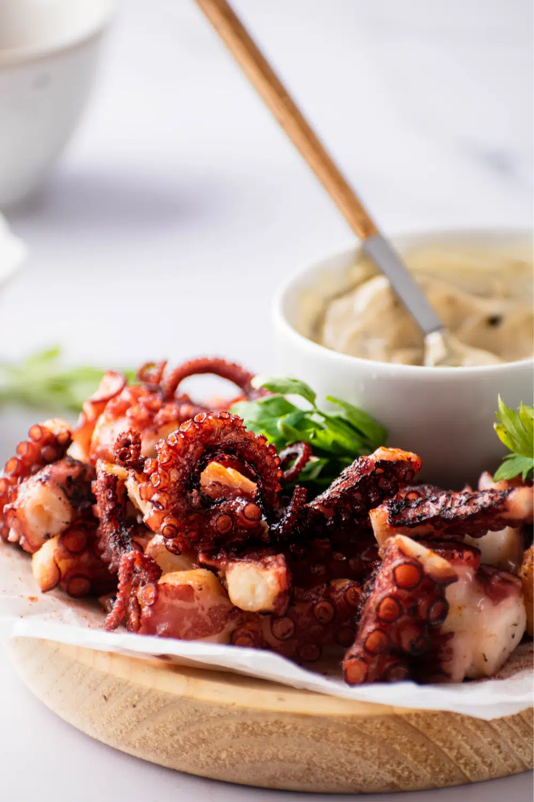

Fried Octopus

Description
The octopus always comes out incredibly tender with a little bit of springiness and the perfect amount of crunch from the golden brown coating.
It's truly a stunning appetizer - or main dish - that will always leave a long-lasting impression on your dinner guests.
Ingredients for the octopus
- 1 precooked and cleaned octopus
- 1 tablespoon vinegar
- 1 half cup of oil
- 2 bay leaves
- half bunch parsley
- 1 clove of garlic
- 1 tablespoon of black garlic paste
- salt and pepper
- 2 allspice berries
- 100g water
- 200g all-purpose flour
- 1 tablespoon corn starch
Ingredients for the sauce
- half cup mayonnaise
- 1 teaspoon curry
- lemon zest (1 lemon)
- lemon juice (1 lemon)
Steps
- Prepare the octopus
- Fry the octopus
- Prepare the sauce
- Serve or store in the fridge